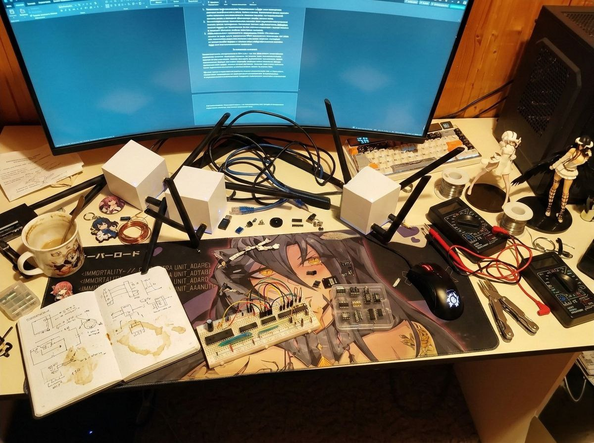

Матрица сравнительного анализа средств автономной связи по ключевым векторам независимости.
| Критерий оценки | Коммерческая сотовая связь (LTE/5G) | Глобальные спутниковые системы (Starlink/Iridium) | Профессиональная цифровая радиосвязь (DMR) | Децентрализованные Mesh-сети (LoRa/Meshtastic) |
|---|---|---|---|---|
| Топология и Архитектура | Жесткая иерархия (Звезда). Тотальная централизация. | Иерархическая (Звезда). Спутник — лишь ретранслятор до наземного шлюза (Gateway). | Одноранговая (Р2Р) или через центральный ретранслятор (Repeater). | Истинная ячеистая (Mesh). Каждый узел равен другому и является ретранслятором. |
| Зависимость от инфраструктуры (SPOF) | Абсолютная. Требует оптоволокна, серверов и электропитания. (Коллапс при блэкауте). | Высокая. Полная зависимость от наземных станций корпорации и биллинга. | Нулевая. Работает напрямую между рациями. | Нулевая. Инфраструктуру создают сами устройства в момент включения. |
| Энергопотребление и автономность | Базовая станция: 1-10 кВт. Требует генераторов. | Терминал: от 15 Вт до 100 Вт. Нужен мощный источник питания. | Трансивер: 5-10 Вт в режиме передачи. Быстрый разряд батареи. | Узел: 0.1 Вт (ТХ), микроамперы в покое. Работает от 1 аккумулятора (18650) неделями. |
| Финансовая независимость | Абонентская плата. Блокировка при нулевом балансе. | Астрономическая стоимость оборудования + тарифы. Удаленный Kill-Switch. | Единоразовая покупка оборудования. Связь бесплатна. | Сборка от 3000 руб (чипы ESP32/nRF). Открытое ПО. Связь абсолютно бесплатна. |
| Криптография и безопасность | Е2EE в мессенджерах нивелируется сбором метаданных. | Закрытые проприетарные протоколы. Перехват оператором. | Алгоритмы AES-256 (в дорогих моделях), но нелегально. | Открытая математика: AES-256 (CTR) + Curve25519 (ECDH). |
| Пеленгация (SIGINT/РЭБ) | Точная триангуляция по базовым станциям. | Эффект «Светового маяка». Пеленгуется РЭБ за секунды. | Низкая. Мощность 5-10 Вт легко пеленгуется (TDOA). | К-Анонимность. Сигнал (100 мВт) тонет в шумах. Лавинный флудинг маскирует источник. |
Математическое обоснование феноменальной дальности технологии LoRa на базе уравнений Шеннона-Хартли и спецификаций трансиверов Semtech SX1262.
Вычислим теоретический предел чувствительности приемника SX1262 на пресете Very LongSlow (SF12, BW=62.5 кГц, SNR=-20 дБ):
S = -174 + 10 * log10(62500) + 6 + (-20)
S ≈ -174 + 47.96 + 6 - 20 = -140.04 дБм. Это $10^{-17}$ Ватта — микроскопическая энергия, лежащая за пределами возможностей обычных раций.
Максимально допустимые потери сигнала в пространстве (при Tx=22 дБм и антеннах по 5 dBi, с потерями кабеля 1 дБ):
LB_max = 22 + 5 - 1 + 5 - 1 - (-140) = 170 дБ.
Используя формулу затухания в свободном пространстве (FSPL), вычислим теоретическую дальность:
Спецификация электрических подключений (Pin-to-Pin) и архитектурная схема автономного узла-ретранслятора (Router/Repeater) для работы 24/7/365.
| Обозначение | Наименование | Обоснование |
|---|---|---|
| SP1 | Солнечная панель 6V/10W | Напряжение холостого хода ~7.2V. Дает ток даже в плотную облачность. |
| U1 | Модуль MPPT (чип CN3791) | Настроен на 6V. Эффективность DC-DC до 94%. |
| U2 | Плата BMS 1S 3.2V (HY2112) | Отсечка по разряду: 2.0V, по перезаряду: 3.65V. Спасает батарею. |
| BAT1 | LiFePO4 сборка (32700) | Емкость 6000 мАч, 3.2V. Не взрывается. Работает от -30°C до +60°C. |
| MCU1 | RAK4631 (nRF52840 + SX1262) | Ток сна: 2 мкА. Аппаратная поддержка BLE 5.0 и LoRa 868 MHz. |
| BASE1 | RAK5005-0 (WisBlock Base) | Объединяет шины I2C/UART/GPIO. |
| ANT1 | Коллинеарная антенна (5.8 dBi) | Fiberglass. КСВ менее 1.2. Оптимизирована для диапазона ISM 868 MHz. |
| GDT1 | Модуль грозозащиты (Gas Tube) | Разрядник N-Type. Предотвращает выгорание трансивера от статики. |
Наведите мышь на плату, чтобы увидеть логику соединений. Схема автоматически масштабируется под размер вашего экрана.
Аппаратный комплекс в процессе отладки и прошивки базовых станций.

Ознакомиться с интерактивной симуляцией работы Mesh-сети, алгоритмов маршрутизации и эмуляцией атак РЭБ можно на выделенном терминале.
Внешняя ссылка на веб-демонстрацию (указана в проекте): https://gedrain.github.io/Prilozenia-D/
>> ЗАПУСТИТЬ ЛОКАЛЬНЫЙ ТЕРМИНАЛ СИМУЛЯЦИИ